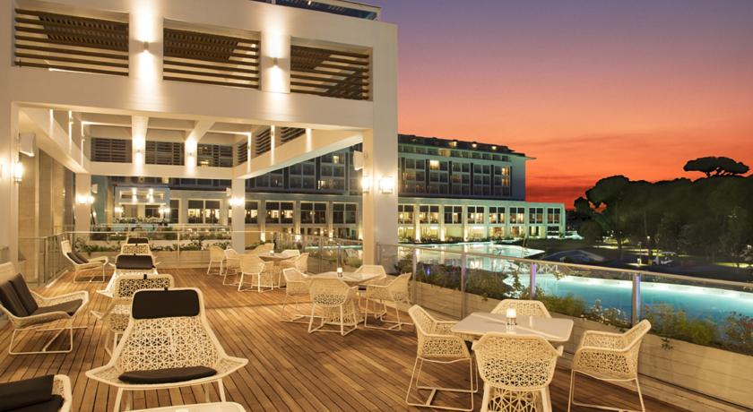

Питание
B Rixos Premium Belek вы встретитесь с самыми замечательными и самыми особенными кухнями мира, а также великолепными блюдами, приготовленными опытными шеф-поварами. Обслуживание а-ля карт в ресторанах для гурманов с итальянской, турецкой кухней или огромный ассортимент самых привлекательных блюд мировых кухонь на шведском столе станут вкусовым отражением качества Rixos Premium Belek. Кроме того, в 8 различных барах Rixos Premium Belek в приятной атмосфере, вы сможете получить ни с чем не сравнимое удовольствие за дружеской беседой.
Основной ресторан "Turquoise" обслуживает гостей 16 часов беспрерывно на завтраки, обеды, ужины и поздние ужины. Ресторан, в котором самые лучшие блюда мировых кухонь предлагаются в виде "шведского стола", состоит из 4 различных зон. Вместимость закрытого помещения 980 человек, открытого - 150 человек.Вам будет трудно сделать выбор из богатого ассортимента блюд, приготовленных искусными руками шеф-поваров.
Ресторан La Rosetta, работающий по системе а-ля карт, предлагает самые изысканные блюда итальянской кухни. Приготовленные шеф-поварами, специалистами в своей области, пиццы, пасты, тальятелле, ризотто и многие другие традиционные и непревзойденные итальянские блюда станут частыми гостями на вашем столе.
Ресторан Rinna, обслуживающий в обеденные и вечерние часы, предлагает гостями приятно провести время, наслаждаясь вкусными блюдами и безукоризненным обслуживанием. Вам понравится вкус разнообразных закусок, подаваемых в ресторане на обед. А на ужин, меню ресторана предложит вам богатый выбор блюд из средиземноморских рыб и морепродуктов. В ресторане Rinna Bы по-настоящему полюбите рыбную кухню.